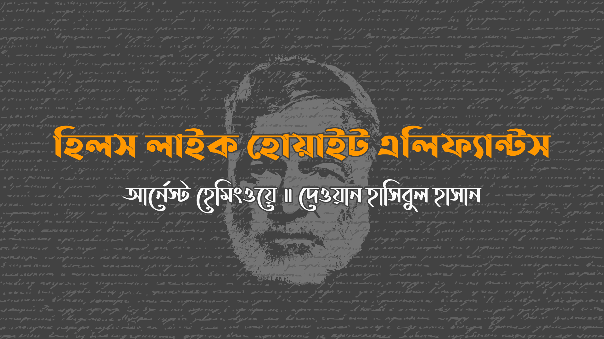

এব্রো’র উপত্যকা জুড়ে দাঁড়িয়ে আছে সুবিশাল আর শ্বেতশুভ্র পর্বতমালা। এদিকটা গাছপালাহীন, ছায়ার কোন অস্তিত্ব নেই। স্টেশনটি দু’রাস্তার মাঝে রোদ পোহাচ্ছে। ওতে ঠেস দিয়ে, দালানের উষ্ণ ছায়ায় উঁকি দিচ্ছে একটি ‘বার’। মাছি তাড়াতে খোলা দরজায় পর্দা ঝুলছে, বাঁশের চাতাইয়ে বোনা। আমেরিকান লোকটি আর তার সাথের মেয়েটি দালানের বাইরে ছায়ায় পাতে রাখা টেবিলে বসেছে। উত্তপ্ত দিন। বার্সেলোনা ফেলে আসা ট্রেনটি মিনিট চল্লিশের মাঝেই পৌঁছে যাবে। দু’মিনিট থেমে আবার মাদ্রিদের উদ্দেশ্যে যাত্রা করবে।
“আমরা কোনটা নিবো?” মেয়েটি জিজ্ঞেস করলো। সে হ্যাট খুলে টেবিলের উপর রেখেছে।
“আজ অনেক গরম,” লোকটি বললো।
“চলো, বিয়ার নিই।”
“দোস কারভেজাস,” লোকটা পর্দার দিকে ফিরে হাঁকলো।
“বড়?” দরজা থেকে এক মহিলা জিজ্ঞেস করলো।
“জ্বি, দুটো বড়।”
মহিলাটি দুটো বিয়ারপূর্ণ গ্লাস আর চামড়া মোড়ানো প্যাড রেখে দুজনের দিকে ফিরলো। মেয়েটির দৃষ্টি সেঁটে আছে দূর পর্বত-রেখায়। সূর্যালোকে পাহাড়গুলোকে দেখাচ্ছে শ্বেতশুভ্র। অঞ্চলটি ধূসর আর রুক্ষ।
“ওদেরকে শ্বেতহস্তি মনে হচ্ছে,” বললো মেয়েটি।
“আমি কখনো দেখিনি,” লোকটি বিয়ারে চুমুক দিলো।
“না, তুমি দেখবেও না।”
“হয়তো দেখবো,” লোকটি বললো। “আমি দেখবো না বললেই কিছু প্রমাণ হয় না।”
মেয়েটি বাঁশের পর্দার দিকে তাকালো। “ওরা এটাতে কিছু এঁকে রেখেছে,” সে বললো। “কি লেখা এতে?”
“আনিস দেল তোরো। একধরণের মদ।”
“আমরা কি চেখে দেখতে পারি?”
লোকটি পর্দার ভেতরে ডাকলো “শুনুন”। মহিলাটি বার থেকে বেরিয়ে এলো।
“ফোর রিয়ালস।”
“দুটো আনিস দেল তোরো দিবেন।”
“জল মিশিয়ে দিবো?”
“তুমি কি এতে জল চাও”
“আমি জানিনা,” বললো মেয়েটি। “জলের সাথে ভালো লাগবে?”
“মোটামুটি।”
“তুমি জল মেশানো চাও?” মেয়েটি জিজ্ঞেস করলো।
“হ্যাঁ। জল সমেত।”
“এটা মিষ্টি স্বাদের,” গ্লাস নামিয়ে মেয়েটি বললো।
“এরকমই সব কিছু।”
“হ্যাঁ,” বললো মেয়েটি। “সবকিছুই মিষ্টি লাগে। বিশেষ করে যেসবের জন্য তুমি অধীর আগ্রহে অপেক্ষা করো, যেমন মদ।”
“আহা, ছাড়ো তো।”
“তুমিই শুরু করেছো,” মেয়েটি বললো। “আমি খুশিই ছিলাম। ভাল সময় কাটছিলো।”
“আচ্ছা, আবার চেষ্টা করো, ভাল সময় কাটাও।”
“ঠিক আছে। আমি সে চেষ্টাই করছিলাম। বললাম, পাহাড়গুলোকে শ্বেতহস্তির মত দেখাচ্ছে। ওগুলো উজ্জ্বল দেখাচ্ছিলো না?”
“দেখাচ্ছিলো।”
“আমি এই নতুন মদের স্বাদ নিতে চেয়েছি। আমরা তো এসবই করি, না? – নতুনকে দেখি আর তারপর আস্বাদন গ্রহণ করি।”
“হয়তো।”
মেয়েটি পাহাড়সারির দিকে তাকালো।
“পাহাড়গুলো সুন্দর,” সে বললো। “ওগুলো দেখতে সত্যি সত্যি শ্বেতহস্তির মত না। আমি শুধু গাছের ফাঁকে ওগুলোর গায়ের রঙকে বোঝাচ্ছিলাম।”
“আমরা কি আরো একটা নিবো?”
“ঠিক আছ।”
টেবিলের অপরদিকে বাঁশের পর্দায় হালকা দোলা দিয়ে বাতাস বয়ে গেল।
“বিয়ারগুলো সতেজ আর শীতল,” লোকটি বললো।
“চমৎকার,” বললো মেয়েটি।
“এটা অতিশয় সাধারণ অপারেশন, জিগ,” বললো লোকটি। “আসলে কোন অপারেশনই না।”
মেয়েটি মাটির দিকে তাকালো যেখানে টেবিল পা মেলে দাঁড়িয়ে আছে।
“আমি জানি তুমি কিছু মনে করবে না, জিগ। এটা আসলে কিছুই না। শুধু বাতাস ভেতরে ঢুকতে দেওয়া।”
মেয়েটি কিছু বললো না।
“আমি তোমার সাথে যাবো আর সবসময় তোমার পাশেই থাকবো। ওরা শুধু বাতাস ভেতরে ঢুকতে দিবে, তারপর বাকি সব স্বাভাবিক।”
“তারপর আমরা কি করবো?”
“তরপর আমরা ভাল থাকবো। আগে যেরকম ছিলাম।”
“এমনটা কেন ভাবছো?”
“একমাত্র ওতেই আমাদের অশান্তি। ওতেই আমরা অসুখী।”
মেয়েটি বাঁশের পর্দার দিকে ফিরলো। হাত প্রসারিত করে দুটো চাতাই ধরলো।
“আর তুমি মনে করো তারপর আমরা ভাল থাকবো, সুখী থাকবো।”
“আমি জানি। তুমি ভয় পেওনা। আমি এমন অনেককে চিনি যারা করেছে।”
“আমিও,” মেয়েটি বললো। “আর তারপর ওরা সবাই খুব সুখী ছিলো।”
“শোনো,” লোকটি বললো, “যদি না চাও তাহলে করতে হবে না। তবে আমি জানি খুব সহজ ব্যাপার এটা।”
“আর তুমি সত্যিই চাও?”
“আমার মতে এটা আমাদের জন্য ভাল হবে। কিন্তু আমি চাইনা তুমি অনিচ্ছায় করো।”
“আর আমি যদি করি তাহলে তুমি খুশি হবে? সবকিছু আগের মত হয়ে যাবে? আমাকে আগের মত ভালবাসবে?”
“আমি এখনও তোমাকে ভালবাসি। আমি তোমাকে ভালবাসি তুমি জানো।”
“জানি। কিন্তু যদি করি, তুমি আবার ঠিক হয়ে যাবে? যদি শ্বেতহস্তীর মত কিছু বলি, পছন্দ করবে?”
“অবশ্যই। আমি এখনও পছন্দ করি কিন্তু এখন এ নিয়ে ভাবতে পারছি না। তুমি তো জানোই দুশ্চিন্তায় আমি কেমন হয়ে যাই।”
“যদি এটা করি তবে আর দুশ্চিন্তা করবে না?”
“এ নিয়ে আর দুশ্চিন্তা করবো না। আমি জানি খুব সাধারণ ব্যাপ্যার এটা।”
“তাহলে আমি করবো। কারণ আমি নিজেকে নিয়ে ভাবিনা।”
“কি বলতে চাচ্ছো?”
“আমি নিজেকে নিয়ে ভাবিনা।”
“আমি তোমাকে নিয়ে ভাবি।”
“ও হ্যাঁ। কিন্তুু আমি নিজেকে নিয়ে ভাবি না। এবং আমি করবো এটা, আর তারপর সব ঠিক হয়ে যাবে।”
“এরকম মনে করলে আমি চাইনা তুমি করো।”
মেয়েটি উঠে স্টেশনের অপরদিকে এগিয়ে গেল। এব্রো’র পাড় ঘেঁষে ফসলের মাঠ আর গাছের সারি চলে গেছে। বহুদূরে, নদী মিশেছে পাহাড়ে। শস্যক্ষেতে ভেসে বেড়াচ্ছে মেঘের ছায়া। মেয়েটা গাছের ফাঁক গলে নদীর দিকে তাকালো।
“আর এ সবই আমাদের হতে পারতো,” সে বললো। “হতে পারতো সবকিছু। প্রতিনিয়ত দূরে ঠেলে দিচ্ছি।”
“কি বললো?”
“বললাম, সবই আমাদের হতে পারতো।”
“এখনও সব হতে পারে।”
“না, পারে না।”
“আমরা সবখানে যেতে পারি।”
“না পারি না। এসব আর আমাদের নেই।”
“এসব আমাদের।”
“না। যখন ওরা সব নিয়ে নিবে, তুমি কিছু ফিরে পাবে না।”
“কিন্তু ওরা নিয়ে নেয়নি।”
“অপেক্ষা করো, দেখতে পাবে।”
“ছায়ায় এসো,” লোকটি বললো। “তোমার এভাবে ভাবা উচিৎ না।”
“আমি কোনভাবে ভাবি না,” বললো মেয়েটি। “আমি জানি।”
“আমি চাইনা তুমি অনিচ্ছায় কিছুু করো –”
“আমার খারাপ হলেও কিছু না,” মেয়েটি বললো। “আমি জানি। আমরা কি আরেকটা বিয়ার নিতে পারি?”
“ঠিক আছে। কিন্তু তোমার বুঝতে হবে – –”
“আমি বুঝি,” মেয়েটি বললো। “তুমি কি এসব চিন্তা বন্ধ করবে?”
তারা টেবিলে বসলো। মেয়েটির দৃষ্টি উপত্যকার রুক্ষ পাহাড়ের দিকে। লোকটি মেয়েটির দিকে তাকালো, তারপর টেবিলের দিকে।
“তেমার বুঝতে হবে,” সে বললো। “যে আমি চাই না তুমি অনিচ্ছায় করো। যদি এটা তোমার কাছে গুরুত্বপূর্ণ হয় তবে আমি দায়ভার নিতে রাজি।”
“এটা তোমার কাছে গুরুত্বপূর্ণ না? আমরা এর শেষটা জানতে পারতাম।”
“অবশ্যই গুরুত্বপূর্ণ। কিন্তু আমি তোমাকে ছাড়া আর কাউকে চাই না। আমাদের মাঝে কাউকে চাই না। আর জানি, এটা খুব সহজ ব্যাপার।”
“হ্যাঁ, তুমি জানো এটা খুব সহজ ব্যাপার।”
“তোমার জন্য বলা সহজ। তবে আমি জানি।”
“তুমি কি আমার জন্য় একটা কাজ করবে?”
“তোমার জন্য সব করবো।”
“তুমি কি দয়া করে, দয়া করে, দয়া করে, দয়া করে, দয়া করে, দয়া করে, দয়া করে, চুপ করবে?”
লোকটি কিছু বললো না। স্টেশনের দেয়ালে ঠেস দিয়ে রাখা ব্যাগের দিকে তাকালো। একসাথে রাত কাটানো হোটেলগুলোর সব রসিদ সেখানে আছে।
“কিন্তু আমি তোমাকে জোর করতে চাই না,” বললো লোকটি। “আমি এসব নিয়ে ভাবি না।”
“আমি চিৎকার করবো,” মেয়েটি বললো।
মহিলাটি দুটো বিয়ারের গ্লাস হাতে নিয়ে পর্দার বাইরে এলো। ভেজা প্যাডের উপরে রাখলো ওগুলো। “পাঁচ মিনিটের মাঝে ট্রেন চলে আসবে,” বললো সে।
“উনি কি বললেন?” মেয়েটি জিজ্ঞেস করলো।
“পাঁচ মিনিটের মাঝে ট্রেন চলে আসবে।”
মেয়েটি একটা লম্বা হাসি উপহার দিয়ে মহিলাকে ধন্যবাদ জানলো।
“আমি বরং ব্যাগগুলো স্টেশনের ওপাশে রেখে আসি,” লোকটি বললো। মেয়টি লোকটির দিকে তাকিয়ে হাসলো
“ঠিক আছে। তাহলে, তুমি ফিরে এলে আমরা বিয়ার শেষ করবো।
লোকটি দুটো ভারি ব্যাগ তুলে স্টেশনের অপরদিকে রাস্তার পাশে বয়ে আনলো। সরু রাস্তা পানে তাকলো, কিন্তু ট্রেনের হদিস নেই। ফিরে এসে বারের ভেতরে পা দিলো লোকটি। ট্রেনের জন্য অপেক্ষারত লোকজন মদ পান করছে। একটা আনিস দেল তোরো নিয়ে লোকজনদের দিকে মনোযোগ দিলো সে। সবাই অধীর আগ্রহে ট্রেনের জন্য বসে আছে। লোকটি বাঁশের পর্দা সরিয়ে বাইরে এলো। মেয়েটি টেবিল থেকে একটু হাসলো লোকটির দিকে।
“ভাল বোধ করছো?” লোকটি জিজ্ঞেস করলো।
“আমি ঠিক আছি,” বললো মেয়েটি। “কোন সমস্যা নেই আমার। আমি ঠিক আছি।”